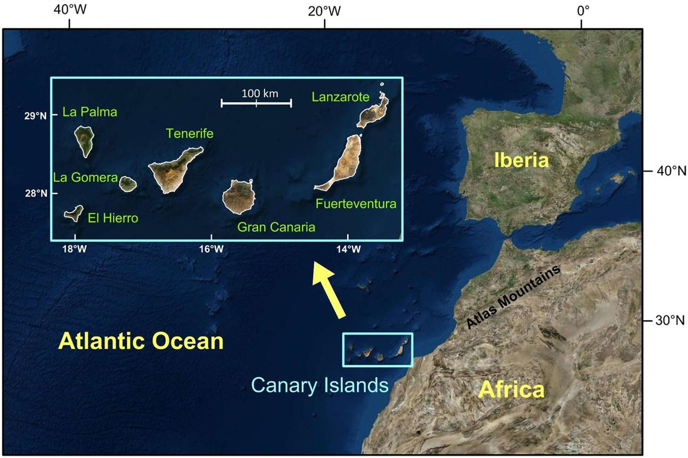
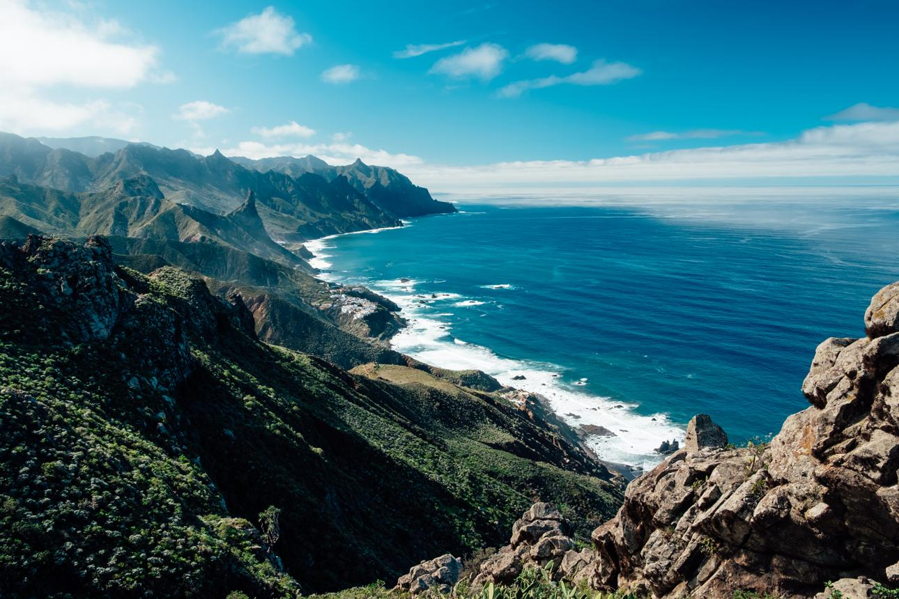

📖 Sejarah Burung Kenari
Burung kenari merupakan salah satu burung kicau paling populer di dunia. Namanya berasal dari Kepulauan Canary (Canary Islands), sebuah gugusan pulau di Samudra Atlantik yang termasuk wilayah Spanyol.
🌍 Asal Mula
Burung kenari liar pertama kali ditemukan di Kepulauan Canary, Madeira, dan Azores. Di habitat aslinya, burung ini hidup berkelompok di hutan, kebun, serta daerah pegunungan dengan sumber makanan berupa biji-bijian dan tumbuhan liar.


💡 Tahukah Kamu?
Nama "Burung Kenari" berasal dari Kepulauan Canary, bukan karena warna bulunya yang kuning. Bahkan kenari liar berwarna hijau kecokelatan.
Kenari liar (Serinus canaria) memiliki warna yang lebih sederhana dibandingkan kenari peliharaan. Warna hijau kekuningan membantu burung ini berkamuflase di pepohonan dan semak-semak di habitat alaminya.

🚢 Masuk ke Eropa
Pada abad ke-15, bangsa Spanyol membawa burung kenari ke daratan Eropa. Karena suara kicauannya yang merdu dan warna bulunya yang indah, kenari segera menjadi burung peliharaan para bangsawan. Awalnya hanya kalangan kerajaan yang dapat memilikinya karena harganya sangat mahal.
🧬 Perkembangan Ras
Melalui proses seleksi dan perkawinan selama ratusan tahun, lahirlah berbagai jenis kenari dengan bentuk tubuh, warna, dan karakter suara yang berbeda. Beberapa ras terkenal antara lain Yorkshire, Border Fancy, Gloster, Fife Fancy, Norwich, dan Lizard Canary.
📍 Kenari di Indonesia
Burung kenari mulai populer di Indonesia sekitar tahun 1980-an dan terus berkembang hingga sekarang. Selain dipelihara sebagai burung hobi, kenari juga banyak diternakkan karena memiliki nilai ekonomi yang baik. Saat ini tersedia berbagai jenis kenari lokal maupun impor yang dapat dipilih sesuai kebutuhan penghobi.
⭐ Fakta Menarik
- 🐤 Nama "Kenari" berasal dari Kepulauan Canary, bukan dari warna kuning.
- 🎵 Kenari jantan umumnya memiliki kemampuan berkicau lebih baik daripada betina.
- 🌾 Makanan utama kenari adalah berbagai jenis biji-bijian.
- 🪺 Kenari termasuk burung yang relatif mudah diternakkan.
- 🌍 Saat ini kenari dipelihara di hampir seluruh dunia.
📚 Referensi
- BirdLife International. Atlantic Canary (Serinus canaria).
- Encyclopaedia Britannica. Canary Bird.
- Handbook of the Birds of the World (HBW).
- Wikimedia Commons. Foto Kepulauan Canary dan Atlantic Canary.